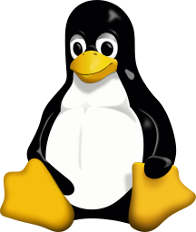
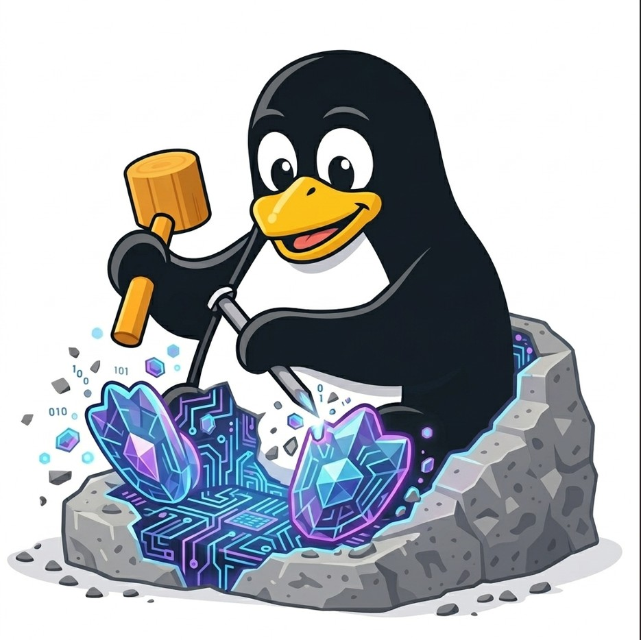

Linux for AI agents — but unlike Linux, when it breaks, it patches its own code and gets smarter. Your vibe coding tool is the chisel.

Tux sits. Humans maintain it.

Chip sculpts itself. Your vibe coding tool is the chisel.
We ran 10 AI agents for 72 hours. Here's what happened when nothing managed them.
10 agents spawned 50 containers. Nobody tracked ownership. 68GB RAM gone. Host dead by morning.
Agent deploys CRM, reports "done", exits. 3 hours later CRM crashes. Dashboard still green.
Agent 1 discovers the API. Agent 2 starts from zero. Same discovery, same cost. Every time.
10 daemons polling at 3am. Answer: nothing. Cost: $86/day doing absolutely nothing.
Dashboard shows success. CRM dead. Database empty. Agent verified with the wrong command.
In every framework, agents are function calls. No PID, no budget, no permissions, no trail.
11 war stories. All real. All dated. Read them all →
5 layers. The first 4 mirror Unix. Layer 5 has no equivalent.
*Layer 5 is what makes it different: the OS evolves itself
When an agent fails, the OS reasons about the gap, writes a fix, and the same agent retries with that fix applied.
Real failure from real demand
Demand signal created
Reads codebase + environment
Patches code, writes new tools
Same agent. Reads fix first. Wins.
This is real. Not a mockup. Read war story #11 →
One person vibe coded the kernel, process manager, memory layer, and 11 war stories of fixes. But one chisel can only sculpt so much.
Install it. Use it for real. Deploy a CRM, organize files, track spending.
It will. Every failure creates a demand signal — a .md file saying what broke.
Open your vibe coding tool. Say "fix the top demand." Your AI writes the fix.
Your fix deploys. Knowledge syncs. The next person who hits that wall — doesn't.
Pick your path. We'll hand you the right chisel.
Thousands picked up the chisel anyway. They shaped computing forever. This is that moment again — for intelligence. The revolution started. The stone is waiting.